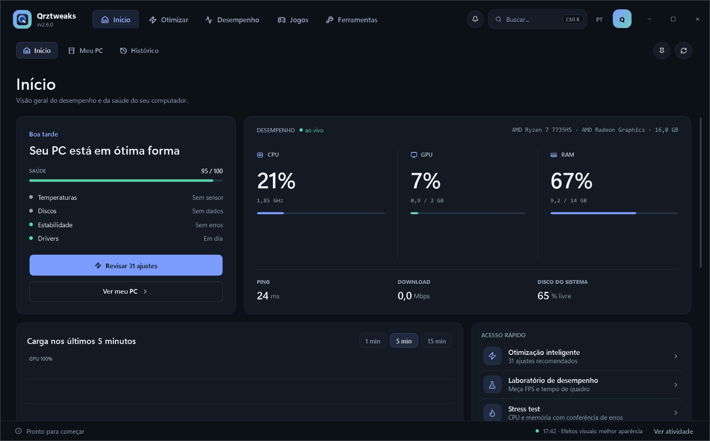

Ajuste com critério.
Recomendações para seu hardware, com risco e efeito de cada ajuste antes de aplicar.
WINDOWS, DO SEU JEITO.
Entenda seu computador, ajuste o que importa e acompanhe o resultado. Tudo em um só lugar, com você no controle.
Windows 10 e 11 · 64 bits · Ativação com chave

MENOS COMPLICAÇÃO. MAIS CONTROLE.
Recomendações para seu hardware, com risco e efeito de cada ajuste antes de aplicar.
Monitoramento ao vivo e comparação de desempenho com dados reais do seu PC.
Backups e histórico para revisar alterações e restaurar os ajustes reversíveis.
Baixe o instalador. Escolha seu plano quando estiver pronto.
UM PLANO PARA CADA PC.
Mesmos cuidados. Diferentes possibilidades.
Os planos de 30 dias não renovam automaticamente.
30 dias de acesso
R$15/mês
O essencial para deixar o PC leve
30 dias de acesso
R$25/mês
Tudo do Base, mais o segundo plano
30 dias de acesso
R$29,99/mês
Todo o app de otimização
Para sempre
R$59,99único
App completo, sem vencimento · o preço de 2 meses do Avançado
Pagamento e ativação pelo Discord. Veja como funciona ↗
Sim. Você pode baixar o instalador sem pagar. Para aplicar os recursos do seu plano, é necessária uma chave de acesso vinculada ao computador.
O Qrztweaks é compatível com Windows 10 e 11, de 64 bits. Não é preciso instalar o .NET separadamente. Alguns ajustes exigem permissão de administrador.
Abra o app e clique em Copiar pedido na ativação. Envie esse pedido à equipe no Discord. Após a confirmação do pagamento, você recebe a chave vinculada ao seu PC.
O histórico reúne os ajustes e backups disponíveis. As operações reversíveis podem ser restauradas. Riscos e limitações são mostrados antes de aplicar.